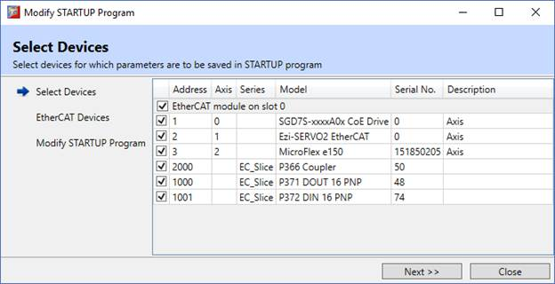
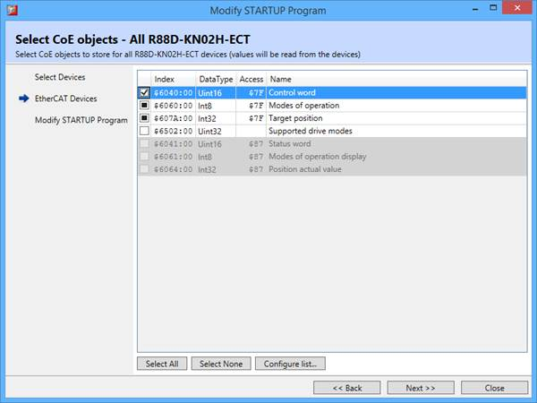
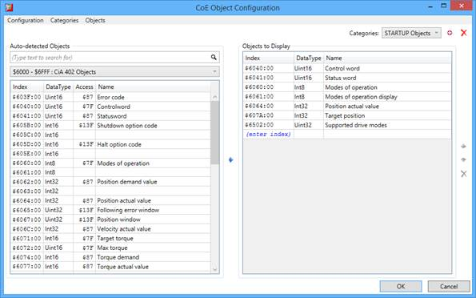
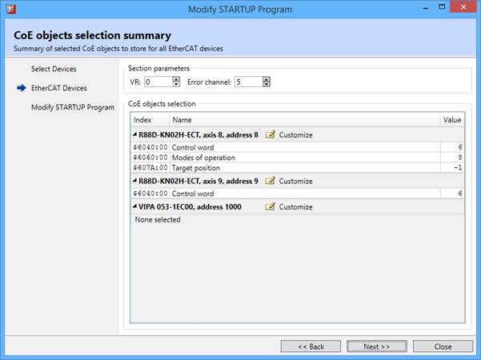
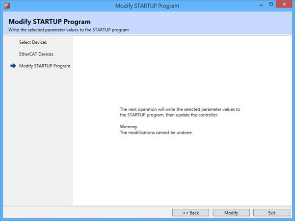

The software provides functionality in form of a wizard to automate modifications of the STARTUP program. The result of the operation of the wizard is one or more automatically generated sections. Each section contains a list of drive parameters to be set.
For EtherCAT devices the STARTUP program section contains a list of CoE objects that are writable in the operational state and their values can be changed without power-cycling the device.

The device selection page is common for all intelligent device types. A list of all detected devices is displayed and the user can select which ones to add to the STARTUP program.
If no intelligent devices from given type are selected for processing, the corresponding section in STARTUP file will not be processed and its content will remain the same.

Selected EtherCAT devices are grouped by their model. For each group of devices a selection page is displayed. This simplifies the CoE object selection procedure on a system with several devices of a same model. As the selection of CoE object is made for multiple devices at once it is possible for the corresponding check-boxes to have 3 states:
Press ‘Select All’ button to select all writable parameters for storing.
Press ‘Select None’ button to select that no parameter will be stored for this drive model.
Disabled lines in the list represent CoE objects that are either read-only or not writable in the operational state.

It is possible to customize the list of CoE objects by pressing ‘Configure list…’ button. The displayed user interface is the same as the one for configuring CoE object list in EtherCAT device info tool window. By default a dedicated category “STARTUP Objects” is created so that categories used by device info tool are not changed.

The selection summary page is displayed once CoE object selections have been made for all EtherCAT devices. The values of selected objects are collected and displayed as well.
It is possible to customize CoE object selection for individual devices by clicking ‘Customize’ button next to device description. When this button is clicked the user is again presented with the CoE object selection page but allowing adjustments only for that particular device.
The EtherCAT STARTUP program section specific parameters, such as the VR used for data transfer and the channel for warning and error messages, can be adjusted on this page.

The final confirmation page is displayed once the CoE object selection has been finalized and all values have been collected.
By pressing ‘Modify’ button all accumulated data will be written to corresponding sections of the STARTUP program.
Press ‘Exit’ button to finish the wizard without doing any modifications to the STARTUP program.